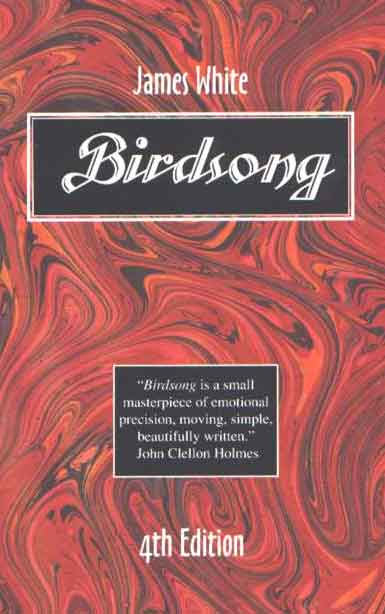
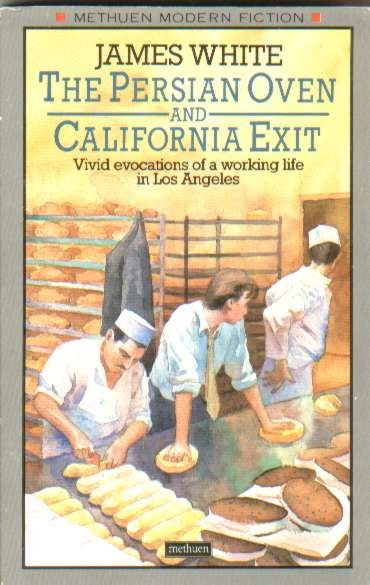

James
P. White, Editor
(jamespwhite@gmail.com)
James P. White, Former Executive Director of the Christopher Isherwood Foundation has published five books of fiction as well as
stories, poems, and articles. He has edited a number of literary
collections. White has received Guggenheim and other fellowships and
has taught at UCLA, the University of Southern California, and the
University of South Alabama. He was the founding president of the Gulf
Coast Association of Creative Writing Teachers and the Texas
Association of Creative Writing Teachers.
On
Birdsong
"I loved it all
the way through. Birdsong reassures me that I can still find any subject matter
enthralling if it's handled by the right writer." Christopher
Isherwood
DataSheet
Film
2008, Producer,Chris and Don, Asphalt Stars, distributed by Zeitgeist. opening in New York June 13, in Los Angeles on July 24. Also shown in Dallas, Seattle, Philadelphia, Boston, Los Angeles, Berkeley, San Diego, Atlanta, etc.
Non-fiction Book
2007, I am Everyone I meet, Tabloid Books, inc., Los Angeles, non fiction book.
Education
B.A. with Honors,
History, University of Texas at Austin, 1961
M.A. in History,
Vanderbilt University, l963
M.A. in Creative Writing
(English), Brown University, 1973 (Marston Fellowship);
University Teaching Fellowship
Teaching Experience
University of Texas,
Permian Basin. Assistant Professor 1973-4; Associate Professor,
1974-7 (Wrote the)
curriculum for the B.A. and M.A. Creative Writing
Concentrations
University of Texas at
Dallas, Visiting Professor (1977-78)
University of California
at Los Angeles, Novel writing, part time (1979)
University of Southern
California, 1979-82, Director, Master's in Professional Writing
(Wrote the curriculum for this new program and guided it)
through University adoption.
Interdiscipinary graduate program in Film, Fiction, Non-Fiction
and Poetry Writing. 150
students at the time
University of South
Alabama, 1982-Director of
Creative Writing; Professor (1987-2003)
Grants and Honors
Guggenheim Fellowship,
1988-89
Fulbright Grant awarded
summer, 1991 (was unable to go)
Dean's Lecturer,
University of South Alabama, 1990
Professional and
Development Grant, USA, 1988
Excellence in Teaching
Award, USA, 2002
Alabama State Council on
the Arts Artist Fellowship (Fiction), 2002-3
Publications
Books
Where Joy Resides: A
Christopher Isherwood Reader,
edited with Don Bachardy. Introduction by Gore Vidal. Farrar, Straus,
and Giroux. December, 1989.
Noonday Press Edition, 1991 Methuen edition, January, 1990. London.,
University of Wisconsin Edition, 2003
Birdsong, a
novel, 1st Edition, 1977. 2nd Edition, 1978; Copper Beech Press, Brown
University, Providence Rhode Island. Third Edition, Methuen,
London, hardback and paperback, 1985. Fourth Edition, TCWP, 1995.
The Great Depression,
poetry, (with Walter Feldman, Brown U.), 1997
Ziggurat Press, Providence,
R.I. (limited edition art book with my poem the text. $250.00 );
The Ninth Car, a
novel, (with Anne Reed ); Rooth),
1978. G.P. Putnam's, New York.
The Persian Oven, a
novella, 1985, Imperial Press, Los Angeles.
The Persian Oven and
California Exit
(fiction),
1987, Methuen, Ltd., London,
hardback and paperback.
Clara's Call, in
Two Short Novels, (with R.V. Cassill)
TCWP, 1992
Poems
(Chapbook), Calliope Press, Austin, Texas, 1979.
Unmask,
co-editor, OK Street, Inc., 1977
Clarity: A Text on
Writing, (with Janice White),
Paul Hanson Publishers, 1982, Los Angeless
Gulf Coast Collection
of Stories and Poems, Editor,
TCWP 1994
Other books edited for
the Texas Center for Writers Press are:
Bicentennial
Collection of Texas Short Stories; Texas Stories and Poems (with
Walter McDonald; New and Experimental Fiction; Poetry
Dallas; William King's Southwest (art book); A
Bibliography of Christopher Isherwood's Personal Papers; TCWP also has brought out
a variety of books under my direction: Selected
Poems by Edwin Honig; No
Marble Angels by Joanne Leedom
Ackerman, The Imminence of Love by Edwin Honig, Mobile Bay Tales
edited by Tom Franklin, The Road, The Eye, by Michael Anderson,
Late Stories by R. V.Cassill, Poems by Laurie O'Brien,
and others.
Journals Edited
Translation Review,
(with Rainer Schulte), first issue, published by the American Literary
Translators Association. 1978, University of Texas at Dallas.
Texas Books in
Review, 1977-79. Founding Editor. A survey of
books published in Texas
or books by Texans and of
the Texas arts scene. This journal
is now published by Southwest Texas State University.
Texas Writers'
Newsletter, Founding Editor.
Published by the TACWT. 1974-78
Sands, a literary
review. Dallas. 1974-78.
Short Stories
I've published thirty
stories in journals.
Recent story
publications include:
"New York City,
1967," The Conscious Reader, Longman's (a text book with)
over a million in sales, 2003
"Winning," Literary
Mobile, an anthology, 2003, Negative Capability Press
Examples of other
stories published include:
"Summer," Kansas
Quarterly, Vol III, No 3, Summer, 1971. Listed under
"Distinctive Short Stories" in Martha Foley's Best
American Short Stories, 1972.
"Spread," Quartet,
Vol. VII, Nos 5l-53, 1975-76, College Station, Tx. Listed under
"Distinctive Short Stories," in Best American Short
Stories, 1977.
"Wives," Kansas
Quarterly, Vol VI, No 2, Winter, 1973. Listed under
"Distinctive Short
Stories", in Best American Short Stories, 1974.
Reprinted in Southwest:
An Anthology. Red Earth Press, 1977.
Poetry
I've published about 20
poems and translations. Sample poems
published are:
"Let us Read
Aristotle," The Centennial Review, Fall, 1972.
"Bowlbound," Mundus
Artium, Vol VI, No 2, 1973.
The Suicide of John
Triggs," Kansas Quarterly, Summer, l974, Vol VI, No 3,
Honorable Mention, Annual Poetry Contest, KQ.
"Waking," Undine,
Vol I, 1974.
Articles
"The Sanford
Exploring Expedition," Journal of African History, Vol 8,
No 2, 1967, Cambridge
University, England.
"Government and
Art: A New Deal Venture," The Markham Review, 1975,
University of Staten Island.
Series of articles,
model teaching lessons on Teaching Creative Writing for Croft Educational
Systems, 1972-6. Includes: Connotation in Composition, Sound in
Language and others.
"Birth of a Father,"
Scene Magazine of the Dallas Morning News. September,
1979.
"How to Improve a
Freshman's Style," Improving College and University Teaching,
Vol 11, No 2, Spring, l973
"Using Connotation
in Composition," Education, Fall, 1973.
Other articles and
features published in Learning Today, Reading Improvement, Minnesota
English Journal, Iowa English Journal, New Writers, Vision Magazine and
the Dallas Times Herald, Twentieth Century Britain, An
Encyclopedia, etc.
Article
publications for 1998-2000
"Christopher
Isherwood, A Personal View," Santa Barbara
Review, Spring, 1999. Santa Barbara, Calif. Reprinted in A
Christopher Isherwood Century published by the University of
Wisconsin, spring, 2000.
"The Meaning of
Disneyworld," Soundings, University of
Tennessee (winter, 1998)
"Two for the
Show," Seattle Review, University of Washington
(fall, 1998)
.
"Christopher
Isherwood's Commonplace Book," Santa Barbara Review,
(spring, 1999)
"Midnight Cowboy
and James Herlihy," Seattle Review, University of
Washington, (spring, 2000).
"On William Goyen,"
Texas Review, Sam Houston State University,
(spring,2000).
"Scenes from an
Emigration:Huxley, Mann, Garbo, Chaplin and a host of other
stars," Eclectic Literary Forum (spring, 1999)
.
"On David Scott
Milton," Amarillo Bay, West Texas A&M
University, (fall, 1999)
"Tomas
Rivera," Riversedge, University of Texas, Pan American..
(spring, 2000)
"On Joanne Leedom
Ackerman," Riversedge, (Accepted).
"On Teaching,"
Satire.org (fall, 1999)
Others.
Reviews in Chelsea,
Mobile Press Register and others (1998-9)
Reviews
Reviews published in The
Los Angeles Times, The Dallas Morning News, The Dallas Times
Herald, San Antonio Light, Houston Chronicle, Drama, Southwest Review,
Arizona Quarterly, Mobile Press Register others.
Sample review
publications include:
Deep in the Heart,
Wyatt Wyatt, Los Angeles Times, l980.
Dingley Falls,
Michael Malone, Los Angeles Times, l980.
The Stand,
Stephen King, Los Angeles Times, 1979.
Wonderful Plant,
William Goyen, The Dallas Morning News.
Breakout: In Search
of New Theatrical Environments, James Schevill,
Drama and Theater, Spring, l975.
1996 reviews
include Robert Kaplan's Ends of the Earth (Random), Harold
Brodsky's On Grief and Reason, Essays (Farrar, Straus)
and Giroux, Jeanie Thompson's Poems (Black Belt).
Newspaper column and
radio show
From 1977-80 I wrote a
newspaper column, Literary Notes on the Southwest, that was published
in various of 23 Texas newspapers. I also hosted a Dallas weekly radio
show about literature and the Southwest. I currently write a regional
column on Southeastern literature for various newspapers such as the
Oxford, Mississippi Record.
Drama and Screenplay
1997-98
Screenplay for Birdsong, optioned by Todd Sidwell, Los Angeles.
Agent: Mike Wise, Los Angeles.
Family Circle,
3 act play, workshop production on a Shubert grant at Brown
University, 1973.
Broadside,
3 act play, workshop production in NY, l972.
Software
Fiction Writing
Program,
with R. V. Cassill
(Brown University) and Sylvan Karchmer (University of Houston).
Software Teacher. Distributed by Projected Learning Systems,
new edition, 2003. (used in approxmiately 500 schools, colleges)
and secondary
Professional
Activities
Founding President of
the Gulf Coast Association of Creative Writing Teachers (an)
organization of writer/teachers from over 100 Southeastern colleges
1992
Founding President of
the Texas Association of Creative
Writing Teachers (a writer/teacher organization of over 120 colleges)
2000 Program Chair, Gulf
Coast Association of Creative Writing Teachers
1999
Newsletter Editor, Gulf Coast Association of Creative Writing
Teachers
1999
Host, GCACWT annual meeting, Fairhope, Alabama.
1994-7 Board Member,
Executive Committee, Alabama Writer's Forum (Fiction Representative)
1993
Literature Panel, Alabama State Council on the Arts (Also)
served on this panel in 1989
1980- International
Editorial Board, Translation Review, ALTA
1980-82
Judge, Best Book Awards, Los Angeles Times' annual
literary awards
1976-77
Member, National Editorial Board, Associated Writing Programs
1978
Board Member, Down Center Stage, Original Productions, Dallas
Theater Center, Dallas, Texas
1976 Head, Creative
Writing Section, Conference of College Teachers of
English, Texas
1975 Head, National
Council of Teachers of English, Western division
(previously, ); program
chairman, keynote speaker
Readings (Fiction) at
University of California, Riverside; Texas Tech University; UT Austin,
Georgetown University, Auburn, University of New Orleans, many others.
Faculty, summer writing programs such as San Antonio Writers Rally,
the Southwest Writers Conference (University of );
Houston, UNO, Montevallo University, others.
Served on panels and
presented papers at Associated Writing Programs, Conference of College
Teachers of English; Alabama College English Teachers Association;
Independent Schools of America; American Literary Translators
Association; Texas Association of Creative Writing Teachers; Gulf
Coast Association of Creative Writing Teachers, Midwest MLA, others.
|
|

"What a delight
even if a difficult delight! it must have been to write it!"
Gwendolyn Brooks
"A poignant
reenactment of a rite of passage, fragile and joyous as the
title." Library Journal.
"Birdsong is a
small masterpiece of emotional precision, moving, simple,
beautifully written." John Clellon Holmes
"It's
beautifully done...I admire the simplicity and naturalness of the
writing and especially the importance given to each of the neighbors
and relatives whom Dewey meets on his wedding day." Anne Tyler
"Touching,
deceptively simple...Mr. White captures precisely the essence of
small realities, the reality of dreams." Sunday Telgraph

"The Persian Oven is highly
successful and even more individual than his first novel, Birdsong.
His convictions make him a writer who goes his own way." Times
Literary Supplement
|